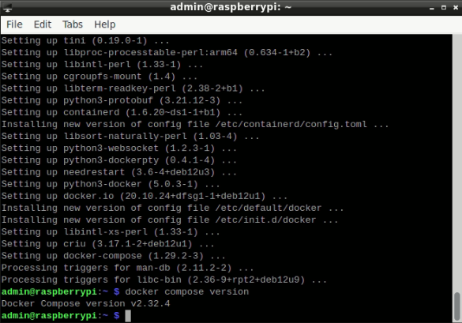

DigitalPrint — это сервис для управления печатью, который позволяет легко настроить и управлять процессом печати через сервер, обеспечивая простоту использования и универсальность.
Вам будет передан каталог client для установки, параметр PRINTER_ID и адрес сервера. Эти данные будут использоваться для настройки вашего окружения.
Настройка включает в себя следующие этапы:
Для выполнения установки, потребуется использовать встроенный терминал Raspberry Pi LXTerminal
Как открыть:
Выглядит он следующим образом:

Для вставки команд в терминал, используйте сочетание клавиш ctrl + shift + c, либо правая клавиша мыши → Paste
Команды нужно выполнять поочередно, дожидаясь выполнения каждой предыдущей
Для начала необходимо установить Docker и Docker Compose на Raspberry Pi. Выполните следующие шаги:
Выполните обновление системы:
sudo apt-get update && sudo apt-get upgrade -y
Установите Docker:
curl -fsSL https://get.docker.com -o get-docker.sh
sudo sh get-docker.sh
Проверьте успешную установку Docker
docker --version
Вы увидете в терминале:

Если версия отобразилась — значит установка прошла успешно, можно переходить к следующему шагу
Установите необходимые зависимости:
sudo apt install python3-pip python3-dev libffi-dev libssl-dev
Установите Docker Compose:
sudo apt install docker-compose
Если в терминале появится вопрос
Do you want to continue? [Y/n]
Введите y и нажмите Enter
Проверьте успешную установку Docker Compose
docker compose version
Вы увидете в терминале

Аналогично предыдущему, если версия отображается — можно переходить к следующему разделу
В этом разделе вам нужно поработать с папкой clients: определить URI принтера, получить адрес хостинга и обновить файл .env, который находится внутри папки
Для корректной работы хоста необходимо определить URI и имя вашего принтера
Остановите CUPS в системе
sudo systemctl stop cups
и
sudo systemctl disable cups
Соберите контейнер:
Тут понадобится ранее скачанная папка client. Поместив ее на рабочий стол, она будет доступна по пути Desktop/client
client используя терминалcd Desktop/client
В случае, если папка расположена по другому пути, используйте команды cd для перехода и ls для поиска
Итак, после перехода в нужную директорию, потребуется собрать контейнер. Для этого, находясь внутри client, введите команду
sudo docker compose up --build
Дождитесь сборки контейнера. После сборки, вы будете видеть много ошибок
Зайдите внутрь контейнера. Для этого, откройте новый терминал и напишите в нем команду:
sudo docker exec -it print_client bash
Дальнейшие команды выполняются внутри контейнера
Получение имени и URI принтера
Для начала, введите команду:
avahi-browse -art
Далее, можно увидеть строки, наподобие этих:
= lo IPv4 Kyocera ECOSYS P5026cdn (USB) Internet Printer local
hostname = [raspberrypi.local]
address = [127.0.0.1]
port = [60000]
txt = ["air=none" "mopria-certified=2.0" "rp=ipp/print" ...]
Исходя из этой информации, нужно собрать URI и имя принтера
Для данного случая, URI имеет структуру:
ipp://{address}:{port}/{rp}
После замены, получаем:
ipp://127.0.0.1:60000/ipp/print
Имя принтера видно из вывода выше: Kyocera ECOSYS P5026cdn
Но для дальнейшего использования, потребуется заменить пробелы на нижние подчеркивания
Получаем Kyocera_ECOSYS_P5026cdn
Итак, после выполнения, мы имеем URI принтера и его имя. С этой информацией, переходим к следующему шагу
.env — ключевой файл для настройки системы client. По умолчанию является скрытым и может не отображаться.
Для того, чтобы это исправить, нужно перейти во вкладку View и поставить галочку напротив Show Hidden:

Далее, откроем файл .env, он имеет такую структуру:
```env
PRINTER_ID=1
PRINTER_NAME=await
PRINTER_URI=await
PRINTER_PPD=everywhere
SERVER_ADDRESS=https://digital-production-efdd.up.railway.app
```
В нем необходимо заменить:
PRINTER_ID — Уникальный идентификатор для каждой точки. Был передан ранее
PRINTER_NAME — был получен ранее. В нашем случае, будет иметь вид Kyocera_ECOSYS_P5026cdn
PRINTER_URI — был получен ранее. В нашем случае, будет иметь вид ipp://127.0.0.1:60000/ipp/print
SERVER_ADDRESS — был передан ранее
Итак, получаем файл со следующим содержимым:
```env
PRINTER_ID=1
PRINTER_NAME=Kyocera_ECOSYS_P5026cdn
PRINTER_URI=ipp://127.0.0.1:60000/ipp/print
PRINTER_PPD=everywhere
SERVER_ADDRESS=https://digital-production-efdd.up.railway.app
```
После внесения изменений, необходимо сохранить файл (File → Save), после чего, можно закрыть
После редактирования .env файла, нужно перезапустить контейнер. Для этого, достаточно кликнуть внутри терминала, где он был запущен и нажать ctrl + c
После чего, командой sudo docker compose up --build, запустите контейнер повторно
На этом установка завершена, можно тестировать сервис через бота